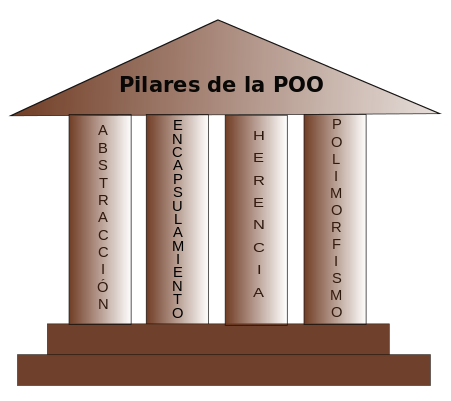

PROGRAMACION ORIENTADA A OBJETOS
Es importante aclarar desde un principio la diferencia que existe entre programación orientada a objetos y un lenguaje orientado a objetos.
La programación orientada a objetos es una “filosofía”, un modelo de programación, con su teoría y su metodología, que conviene conocer y estudiar antes de nada. Un lenguaje orientado a objetos es un lenguaje de programación que permite el diseño de aplicaciones orientadas a objetos. Dicho esto, lo normal es que toda persona que vaya a desarrollar aplicaciones orientadas a objetos aprenda primero la “filosofía” (o adquiera la forma de pensar) y después el lenguaje, porque “filosofía” sólo hay una y lenguajes muchos. En este documento veremos brevemente los conceptos básicos de la programación orientada a objetos desde un punto de vista global, sin particularizar para ningún lenguaje de programación específico.
ESTRUCTURA DEL HTML
 HTML es un acrónimo de Hypertext Markup Language y es una tecnología que nos permite escribir páginas Web. HTML es un lenguaje de computación que entienden los exploradores Web.
HTML permite implementar el mecanismo apropiado para vincular diferentes páginas denominando hipervinculación a esta propiedad. La hipervinculación permite ir de una página a otra simplemente haciendo clic en un vínculo.
HTML es un acrónimo de Hypertext Markup Language y es una tecnología que nos permite escribir páginas Web. HTML es un lenguaje de computación que entienden los exploradores Web.
HTML permite implementar el mecanismo apropiado para vincular diferentes páginas denominando hipervinculación a esta propiedad. La hipervinculación permite ir de una página a otra simplemente haciendo clic en un vínculo.